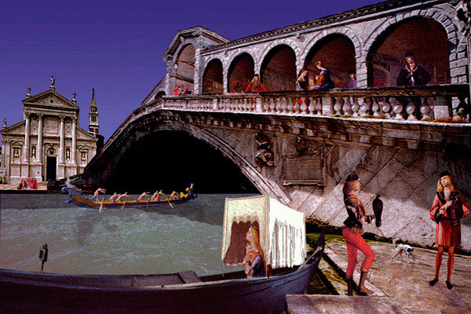

Lindell Lee McElfresh
La Favola del Rialto
 |
| (1 of 12) |
 |
| (1 of 12) |
"Lindell Lee McElfresh's career in advertising photography took him from Los Angeles and New York to six years abroad, based in Melbourne, Singapore, and, finally, Copenhagen, before returning to New York's Tribeca in 1990. At that time he decided to concentrate on painting, but within a year became intrigued - if not obsessed - by the artistic potential of computer imaging. Largely self-taught, many of his earliest computer work is now locked away on archaic storage media. Since then he has created thematic groups of prints utilizing images scanned from his painting and photography. His recent work has been inspired by Venice, where he and his wife live when not at home in Manhattan. His current project is based on the monuments and iconography of Il Cimitero di S. Michele."These twelve images were inspired by visits in 2004 to rooms XXII and XXIII of the Academia Galleries where Lindell Lee McElfresh first encountered the painting of Venetian master Vittore Carpaccio and envisioned a series of capricci in which a Renaissance cast of characters would appear against a new backdrop of contemporary Venetian scenes. McElfresh set about photographing Venice as a myriad of "elements," including architecture and sculpture, land and lagunascapes, skies and canals, animals, birds, and boats. He then dissected, reassembled, and ultimately transformed these elements into a new, yet painterly environment in which Carpaccio's sumptuously costumed, elegant, often ceremonious Venetians could enact new roles. This fanciful combination - or capriccio - is a kind of art historical continuum through which McElfresh has created his own personal view of Venice. It is a place where the past and present, the real and fantastic are seamlessly intertwined."